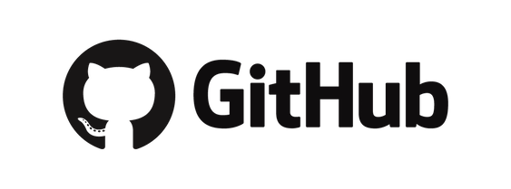
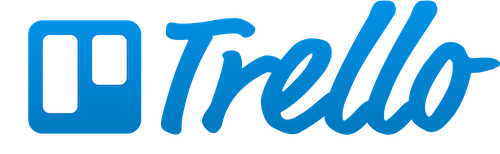
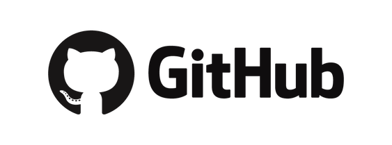
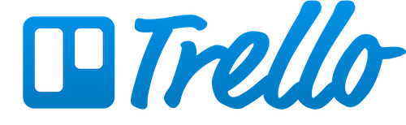
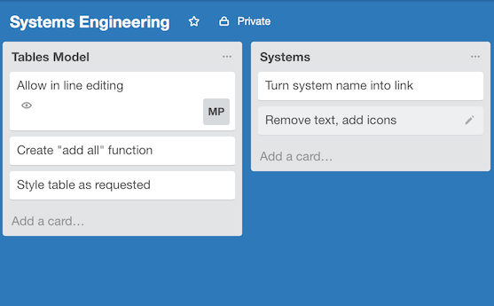
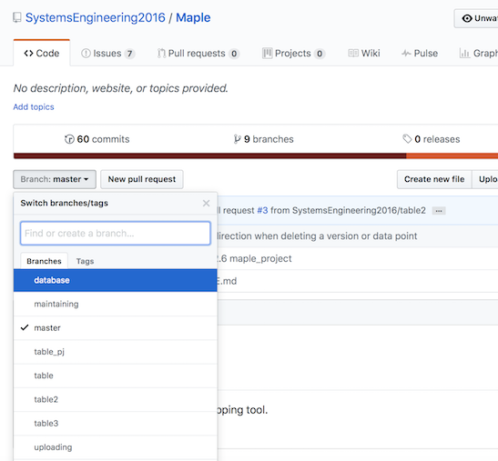
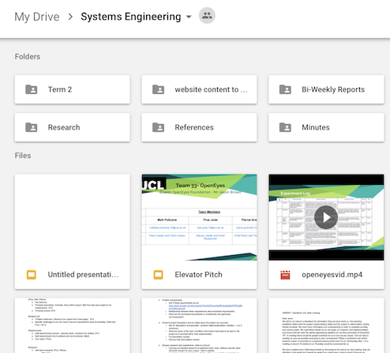

Tools
In order to make our project ran as smoothly as possible we used a number of different project management tools. From things such as Slack to Trello to Git, all of the tools we used allowed us to work as efficiently as possible and allowed us to work to the best of our ability. The selection of tools that we used can be shown below:
 



Slack
We used Slack as the main source of communication between the team as it is what we found the best piece of software for this. We were able to create multiple channels for different topics which allowed us to discuss a number of different things simultaneously. We were also able to add integrations to different channels which is the feature we found most useful as a team wit the best integration we used being the GubHub integration. This meant that everytime a team member pushed to our repo we would get a notification of this and the details of that specific push. Not only did this allow us to keep track of the work being done by members of the team, it also meant that merge conflicts could easily be avoided.

Trello
Trello was used in order to organise the tasks that we had to complete for the project. We found it a good tool to use as it kept us organised - especially during the development stage of the project. For example, we could add tasks to do for individual parts of development and assign a team member to that task. We also had another slack integration for this so that once a team member had completed an assigned task, we would get a notification in one of our slack channels.

GitHub
We chose Git because this is the version control service we are most familiar with as a group. GitHub was specifically chosen as the Git service to use as it is free, managed for us, and allows us to open-source our project (unlike the private services provided by our university). In addition, the core OpenEyes project already uses it as well. GitHub was very helpful in terms of project management as it allowed us to work on different parts of code, avoiding conflicts where possible. We were able to track different iterations of development by using multiple branches which aided development.

Google Drive
We used Google Drive as it was an efficient way of being able to manage all of the documentation required during the project. We utilised the ability to edit documents at the same time as it allowed us to easily complete tasks such as Bi-Weekly reports where we could see what each team member was writing in order to guide eachother when necessary.
